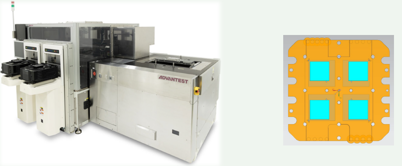

CONTENT FOR Jan 2026 GO SEMI & BEYOND NEWSLETTER ([Release Date: Jan 28)]
HEADER:
\<Newsletter logo>
Advantest's newsletter focused on the semiconductor industry and beyond.
January 2026 -- In this Issue:
[Top Stories]
-
Singulated Die Test Ensures Stacked Die Quality as Power Density Rises
-
Harnessing Digital Twins and AI/ML for Smarter Semiconductor Test Optimization
-
SiConic™: Innovation Through Efficiency
-
2026 Executive Viewpoint: AI Looms Large As Test Applications Continue to Broaden
[Spotlight on Business]
- Trusted Innovation, Navigating Complexity---Interview with CxOs
[Featured Products]
-
Advantest Expands 7038 System-Level Test Platform with Right-Sized Single Test Rack Solution for High-Volume Manufacturing
-
Advantest Unveils MTe -- Unified, Scalable Test Platform for Power Semiconductor Devices
-
Advantest Introduces Next-Generation M5241 Memory Handler to Support High-Performance AI Memory Devices
-
Advantest Unveils T2000 AiR2X Air-Cooled SoC and Power Analog Test Solution
[Featured Events]
- SEMICON West 2025 Concludes with Great Success
[Podcast Spotlight]
- Reinventing Semiconductor Packaging: AI, Physics and Geometry in Action
[ESG Spotlight]
[Advantest in the News]
[Upcoming Events]
[On the Lighter Side]
[Feedback]
[The GO POLL]
**\ **
Singulated Die Test Ensures Stacked Die Quality as Power Density Rises
Editor's note: This article is based on the poster "The Age of Singulated Die Test" presented at the Test Vision Symposium held in conjunction with SEMICON West, October 7-9, 2025, Phoenix, AZ.
By Brent Bullock, Advantest America
The accelerating rate at which the industry adopts new process nodes is posing critical test challenges. Shrinking geometries combined with increased design complexity with respect to metrics such as gates per square micrometer, plus higher operating frequencies, are leading to ever higher levels of power density. The resulting device thermal excursions are driving the need for singulated die test (SDT) with active thermal control (ATC), which combine to boost yields and ensure the quality of the chiplets and other die that make up multichip packages for high-performance computing (HPC) and artificial-intelligence (AI) server farms.
SDT detects defects that do not appear until after singulation, which are most often faults in chip-to-chip interconnects. SDT can also improve device handling efficiency, so it is applicable to multiple test scenarios, with test content varying accordingly:
-
Die-probe insertion using Final-Test conditions
-
Die matching and die-bank rescreening
-
Complex chip-on-wafer/ known-good assembly testing
-
Extended yield learning
-
Silicon-photonics optical-engine testing
Power-density growth
Figure 1 shows an estimate of power density's dramatic growth in the HPC/AI era.

The high power density in turn produces large thermal gradients, with the low to max temperature changes increasing dramatically in both mission mode and test mode as process geometries shrink, as shown in Figure 2. These large temperature gradients lead to increased yield loss due to challenges in maintaining the set temperature.

Consequently, Advantest customers are taking steps to monitor and control the thermal gradients and respond to the temperature excursions from the wafer-sort level through final test.
However, the ability to control thermal behavior during various test insertions has been problematic, requiring close attention to the thermal interfaces and differing thermal masses. Thermal control at wafer sort traditionally has been very limited, because a single large chuck, historically with just a single sensor in the middle of it, provides temperature control. Subsequent chuck configurations included multiple sensors in multiple zones, approaches that did provide some relief and drove yield improvements. Package test also presents challenges, because the package itself, potentially with a lid, adds thermal mass. So many customers feel they need to move to more aggressive thermal-control solutions at die sort.
Die-probe insertion
Die-probe insertion offers one solution, with thermal control required for only a small piece of the wafer---the singulated die---allowing thermal interfacing directly without a lid, so the thermal mass is very low and the thermal characteristics very different. With the arrival of high-power-density devices, SDT, which has existed since about 2015 but has found limited adoption, is now gaining interest.
SDT allows customers to respond to temperature changes very quickly, and Advantest has been involved in studies in this area. In particular, customers have CoWoS and similar advanced package assemblies, and many defects in such structures do not appear until after the singulation process, which applies mechanical stress to each die. Furthermore, temperature stresses for singulated dies can be greater because each singulated chip cannot rely on the mass of the entire wafer, which provides mechanical strength and thermal dissipation. The combination of mechanical and thermal stresses increases the chances of faults at the die-to-die interconnects, whether in CoWoS assemblies or HBM stacks. The latter continues to present yield challenges as stack heights continue to grow.
There are several benefits to singulated die test. The main focus is on temperature response---the ability to regulate thermal excursions during a wafer-sort insertion by mimicking the final-test conditions. Some Advantest customers have a discrepancy between final-test temperature and wafer-sort temperature set points because the wafer-probe environment has been more challenging. The singulated die probe allows better control to mitigate the thermal excursions and probe burn risk that are more common with typical chuck-based probe insertions. With the rise of chiplet technology and stacked-die use, it is increasingly likely that good dies can be mixed with bad dies, resulting in good dies, substrates, and interposers being discarded.
SDT can also accelerate product release cycles, speeding time to market. With traditional wafer probing, a few bad dies can hold up a complete wafer as engineers study yield problems and determine how to fix them. With SDT, bad dies can be held back for study, but good dies can immediately proceed on to packaging and final test and on to customers.
Traditional wafer probing is also subject to probe-burn concerns that arise when touching down on multiple dies, especially in the early phases of a new design or process node. SDT can also avoid the silicon defectivity problems that compromise multi-site probe test efficiency by matching probably good die.
Die-level handler
Equipment that can address the challenges of singulated die test includes the Advantest HA1200 die-level handler, which, when equipped with an active thermal interface (ATI), can be used in conjunction with test systems such as the Advantest V93000 SoC tester. The combination can enable the test of high-end SoCs with excellent test coverage, helping to reduce yield loss at the final test of multi-die assembled products. Figure 3 shows the HA1200 (left) and a 100-W/cm2 quad-site active thermal interface for testing CPU chiplet dies. When used with the V93000, which sits on top of the HA1200's die alignment unit (right-side module below), the handler and thermal interface can obtain a thermal profile to enable comparison with the thermal profiles at wafer sort and at final test.

Figure 3. An Advantest study employed an HA1200 handler (left) and a 100-W/cm2 quad-site active thermal interface (right).
A specific study conducted by Advantest included an analog-to-digital converter attached to the probe load board to capture profiles of device current, voltage, and junction temperature; an HA1200 die-level handler configured with two generations of the company's ATI thermal solution; and a V93000 tester programmed to test a 6-nm CPU chiplet die.
The study involved manual execution of a single test-site V93000 test flow on a quad-site die-probe setup using a hot temperature setpoint, and it compared the temperature profiles of a hot-temperature wafer-sort insertion, a hot-temperature package-test insertion, and two hot-temperature SDT insertion. Figure 4 shows the peak temperature excursion and the time to guardband for the wafer-sort hot test, two test setups for the SDT hot test (Thermal setup #1 with the Gen 1 ATI solution and Thermal setup #2 with the Gen 2 version), and the final package test hot test.
Further work
Work remains to be done on effectively implementing SDT. For example, customers are very interested in applying SDT to achieve SoCoW-assembly quality improvements. Also of interest are new, larger Advantest thermal interfaces that can dissipate more heat. Work needs to be done evaluating these interfaces based on customer data, as power density increases with future process nodes. In addition, work is proceeding on multisite efficiency gains and quad-site thermal evaluation, as well as on studying post-singulation yield and defectivity.
Finally, customers are evaluating when and for what devices SDT is most effective. Most customers are expected to continue with the Wafer Sort 1 cold test, but they could consider replacing the Wafer Sort 2 chuck-based test with SDT, allowing closer tuning with final-test results. These customers must evaluate trade-offs between yield gains and disruption to their standard test processes and the capital investment involved. Considerations will include factors such as total test time and the average selling price of the device under test. For many customers producing singulated chip on wafer structures, SDT will very likely pay for itself.
Conclusion
Advantest's HA1200 handler equipped with ATC has demonstrated the ability to precisely regulate temperatures, allowing a singulated die test to simulate final-test conditions. An Advantest study has demonstrated that SDT is effective in controlling temperatures as process geometries shrink and power densities rise for HPC and AI devices with HBM stacks and CoWoS structures.
Acknowledgements
Advantest team members in Japan, Taiwan, Singapore, and the U.S.A. contributed to this work.
[###]
Harnessing Digital Twins and AI/ML for Smarter Semiconductor Test Optimization
This article is adapted from a piece published in Commercial Micro Manufacturing magazine. You can read the original article on the CMM website here.
By Vincent Chu, Sr. Consulting Manager, Advantest Cloud Solutions
As semiconductor devices become increasingly complex, the challenge of testing them efficiently and accurately grows in parallel. Traditional testing methods---rooted in static test plans---often fall short in dealing with the nuances of today's advanced integrated circuits (ICs), especially in high-volume manufacturing environments.
In response, the industry is exploring real-time, data-driven strategies powered by artificial intelligence and machine learning (AI/ML). Among the most promising approaches is the use of digital twins---virtual replicas of production systems---to develop, test, and deploy AI/ML models that can dynamically optimize semiconductor testing processes.
This article outlines a digital twin framework developed to support AI/ML-enabled semiconductor test optimization. It describes the system's architecture, its integration with real-world and virtual environments, and how it supports a complete AI/ML lifecycle---from development to deployment and monitoring.
The Testing Bottleneck
IC testing plays a crucial role in guaranteeing product reliability across sectors like automotive, consumer electronics, and telecommunications. However, as devices become more heterogeneous---integrating multiple technologies in a single package---static, one-size-fits-all test approaches no longer suffice.
These legacy methods often result in excessive test time, missed defects, or yield loss due to overly conservative test limits. The inability to adapt in real-time to device variability creates inefficiencies that can ripple across entire production lines, increasing costs and time-to-market.
This is where AI/ML-driven adaptive testing comes in. By analyzing test data as it\'s generated, AI models can infer outcomes, flag anomalies, and dynamically alter test sequences. For example, if early-stage test results confidently predict a device\'s performance, tests can be optimized, saving time and resources. Conversely, AI can flag devices that may require additional scrutiny, focusing effort where it matters most.

Fig. 1. Vmin prediction leveraging feedforward data from prior test insertions to reduce test time
Digital Twin Framework: Overview
The proposed solution combines a real-time production environment with a cloud-based digital twin, creating a unified platform for intelligent test optimization. The digital twin serves as a sandbox for developing and validating AI/ML models, while the production environment enables real-time deployment and monitoring.
Key Components
-
Production Environment: Includes Advantest's V93000 testers, ACS Edge Servers, and ACS Unified Servers. Real-time test data is collected and processed through the ACS Real-Time Data Infrastructure (RTDI).
-
Digital Twin Environment: Hosted on Amazon Web Services (AWS), this mirrors the production environment virtually using VMs that simulate testers and edge computing platforms.
-
Data Synchronization: Achieved via AWS IoT using Message Queuing Telemetry Transport (MQTT) protocol, enabling secure, low-latency bidirectional communication between production and digital twin environments.
-
AI/ML Workflow: Supports the complete lifecycle---development, validation, deployment, monitoring, and updating of models---all orchestrated through this synchronized ecosystem.
Production Environment Architecture
The production environment is designed to execute AI/ML-powered test optimization in real time. It includes:
-
V93000 Tester with ACS Nexus™ Software: A widely used test platform for System-on-Chip (SoC) devices. Nexus provides data streaming and test control capabilities.
-
ACS Edge Server™: Performs AI/ML inference at the edge with millisecond latency. Deployed models interact directly with live test data through secure, high-speed connections.
-
ACS Unified Server™: Acts as a central repository for containerized applications and historical data, also enabling feed-forward use cases where earlier test results inform later stages.
This tightly integrated setup allows dynamic test adjustments, reducing overall test time and improving yield without sacrificing reliability.

Fig. 2. Diagram of production environment
Virtual Testing with the Digital Twin
In parallel, a digital twin environment replicates the production setup on AWS, offering a safe, scalable space for innovation.
This virtual lab uses cloud-hosted VMs to mimic the tester host controller, Edge Server, and Unified Server. Engineers can simulate real-time testing by replaying historical data, allowing them to train, test, and fine-tune AI/ML models without interfering with ongoing production.
A web-based UI provides remote access and management, making collaboration possible regardless of location.

Fig. 3. Diagram of digital twin environment
Synchronizing Real and Virtual Worlds
For the framework to function effectively, the real and virtual environments must be tightly synchronized. This includes:
-
Data Transfer (Offline and Real-Time): In early stages, historical test data is transferred manually using SFTP and stored in AWS S3. Once deployed, real-time synchronization uses AWS IoT and MQTT, with topics categorizing both test results and control actions.
-
MQTT Topics: For example, test data from a leakage test might be published under /v93000/tester_A/test_results/leakage, while deployment commands use /action/edge_server_B/deploy/model_ID.
-
Security: All communications are encrypted with Transport Layer Security (TLS), aligning with zero-trust principles and protecting sensitive test data during transfer.
{width="6.188132108486439in" height="4.108333333333333in"}
Fig. 4. Data synchronization between the digital twin and the production environment
AI/ML Lifecycle: From Concept to Deployment
The framework supports a structured AI/ML workflow designed for high agility and minimal disruption to production.
- Development
Models are developed in the digital twin using historical or synthetic test data. Standard Test Data Format (STDF) files stored in AWS S3 can be used to simulate real-time streams to virtual ACS Edge Servers, allowing algorithm experimentation in a production-like context.

Fig. 5. Development
2. Validation
Before deployment, models undergo statistical validation using techniques like cross-validation or hold-out testing. Engineers can run simulations combining the virtual tester and Edge Server to understand real-world impacts on yield and quality.

Fig. 6. Validation
- Deployment
Deployment is managed through AWS IoT Jobs, which automates container delivery. Models are packaged into containers, pushed to the digital twin Unified Server, and then replicated to production Unified Servers and deployed to Edge Servers.

Fig. 7. Deployment
- Monitoring
Once live, the digital twin tracks model performance using MQTT data feeds. KPIs such as prediction accuracy, false positive rates, and statistical drift are monitored to assess effectiveness.

Fig. 8. Monitoring
- Updating/Redeployment
If performance degrades, new models are trained and validated in the digital twin, then redeployed. This update process is designed to avoid interfering with ongoing testing, supporting continuous optimization.
Implementation Insights and Use Case
To validate the framework, a prototype was implemented using Advantest's ACS Gemini platform. A simulated production environment was created using VMs and historical test data to represent a common AI/ML use case: Dynamic Part Average Testing (DPAT).
Using pseudo-models, the team demonstrated how adaptive testing logic could be applied in near real-time, reducing test time while maintaining defect coverage. The test sequence and model deployments were coordinated through AWS IoT Jobs and MQTT messaging, proving that the system could operate under conditions resembling real-world factory environments.
Key Benefits:
Production-Grade Simulation
The digital twin allows model development and debugging under realistic conditions, eliminating the need to disrupt live production lines.
Agile Deployment
AWS IoT and containerization enable remote model deployment in seconds, streamlining the go-live process.
Continuous Improvement
Real-time monitoring and bidirectional data flows make it easy to identify underperforming models and roll out updates with minimal downtime.
Scalability
AWS cloud resources can be scaled on demand to handle increasing data volumes, enabling the framework to grow with evolving manufacturing needs.
Collaboration
Cloud-based access encourages cross-disciplinary teamwork among engineers, data scientists, and developers regardless of physical location.
Future Directions
The framework's flexibility opens doors for further enhancements:
Synthetic Data for Robust Training
To accelerate model development, synthetic data generation will be incorporated. This allows testing for rare or extreme scenarios---such as silicon defects or process drift---without waiting for real-world failures to occur.
SEMI RITdb Integration
Planned adoption of the SEMI E183 RITdb standard, which supports MQTT-based real-time data streaming, will improve compatibility with other smart manufacturing systems. This standardization facilitates broader data interoperability across test platforms and factory automation systems.
Conclusion
As semiconductor devices push the limits of complexity and scale, traditional testing strategies are no longer sufficient. The integration of digital twin technology with real-time AI/ML offers a promising path forward, enabling adaptive, intelligent, and efficient testing methodologies.
This digital twin framework showcases how cloud-based virtualization, real-time data synchronization, and scalable AI/ML deployment can modernize the semiconductor testing landscape. By bridging the gap between development and production, it paves the way for smarter manufacturing and faster innovation---exactly what the industry needs in an era of relentless progress.
[###]
Advantest SiConic™: Innovation Through Efficiency
By Brian Archer, Silicon Test Ecosystem Development, Advantest
While bringing increasingly complex semiconductor devices to market, engineering teams face mounting pressure to accelerate development cycles while maintaining uncompromising quality. Advantest's SiConic™ is a game-changing software platform, bridging design verification and silicon validation, redefining how engineers interact with silicon across the lifecycle.
A Paradigm Shift in Validation
SiConic enables seamless reuse of test content from simulation environments to actual silicon. This shift eliminates the traditional bottlenecks of simulation loops and conversions, allowing engineers to execute native test cases directly on silicon. The result? A dramatic reduction in debug cycle times---up to 75% faster---and a more deterministic path to a reliable sign-off.
Empowering Collaboration Across Domains
SiConic is more than a toolset---it's a collaborative platform that empowers DV, SV, DFT, and test engineering teams to work within a unified environment. This cross-domain synergy is essential in today's semiconductor development cycle, where time-to-market pressures and design complexity are at an all-time high.
By enabling engineers to debug and validate test content rapidly, SiConic frees up valuable engineering capacity to put the focus back on innovation through efficiency.
EDA Partnerships: Enabling SiConic
SiConic leads with strong partnerships, including Cadence, Siemens, and Synopsys---three of the most influential players in the semiconductor design ecosystem. These collaborations ensure that SiConic integrates smoothly with widely adopted verification and validation workflows, allowing teams to reuse test content across simulation and silicon with minimal friction.
By aligning with these partners, SiConic supports a broad range of tool chains and methodologies, making it easier for engineering teams to adopt the platform without disrupting existing processes. This interoperability not only accelerates bring-up and debug cycles but also enhances collaboration across DV, DFT, and validation teams.
Together, these partnerships extend SiConic's reach and relevance, reinforcing its role as a scalable, future-ready solution for modern SoC development and test deployment.
Reuse Across Insertions: One Flow, Many Targets
A standout strength of SiConic is its ability to reuse test content across multiple insertions---from simulation to emulation, silicon bring-up, and production validation. SiConic enables engineers to define test intent once and deploy it across various environments without rework.
This reuse dramatically reduces engineering effort, eliminates duplication, and ensures consistency across the validation flow. Whether targeting IP blocks, subsystems, or full SoCs, SiConic adapts to the context while preserving the original test logic.
The result is a unified, scalable approach that accelerates debug, improves coverage, and shortens time-to-quality (TTQ) across projects. For teams managing multiple silicon insertions or product variants, this capability is a game-changer.
Conclusion
In an industry where time-to-market and product quality are critical, SiConic offers a compelling solution for modern silicon validation. By unifying software and hardware environments, enabling test reuse, and accelerating debug cycles, it empowers engineering teams to deliver better products---faster.
As semiconductor designs grow more intricate and timelines more compressed, platforms like SiConic will be essential in maintaining competitive advantage. For those looking to stay ahead of the curve, SiConic is not just a tool---it's a strategic enabler.
To learn more, visit the official https://www.advantest.com/en/products/siconic/.
[###]
AI Looms Large As Test Applications Continue to Broaden
This article is adapted with permission from Semiconductor Digest Magazine as part of their 2026 Outlook series. You can find the original article here.
By Doug Lefever, Representative Director and Group CEO, Advantest Corp.
The semiconductor industry is entering a new era in which complexity, cost, and performance pressures converge. Meeting these demands will require unprecedented collaboration across the supply chain. In 2026 and beyond, collaboration will be key to pioneering best-in-class test cells that drive velocity and innovation.
From a market perspective, we see artificial intelligence (AI) continuing to drive significant growth in the semiconductor market, spurring new innovations in advanced packaging, high-bandwidth memory (HBM), thermal control, and optical integration to support the next generation of high-performance GPUs. As these complex challenges combine, testing plays a key role in enabling customers to meet time-to-market and quality requirements.
In the coming year, we anticipate continued advancements in 2.5D/3D packaging to enable higher performance in AI and high-performance computing (HPC) devices. Foundries and OSATs are making significant investments in next-generation packaging technology, such as chip-on-wafer-on-substrate (CoWoS), EMIB, through-silicon vias (TSVs), and co-packaged optics (CPO). HBM and other advanced memory technologies also rely on 3D stacking to offer the high processing speeds needed to fuel AI applications.
The increasingly complex architecture of 2.5D/3D chips presents various challenges during test. For example, heightened density and processing speeds elevate temperatures, increasing the risk of failure after wafer-level and final test. This necessitates specialized test equipment with sophisticated thermal-management capabilities and active thermal control. We foresee a growing need for more testing at the singulated-die level, where more precise thermal control can be achieved to capture failures before stacking and ensure only known-good die are packaged.
In addition to die-level test, customers are looking for more ways to reduce yield loss, especially as the cost of 3D packaged devices rises. In response, test companies are moving more test content to earlier insertions. For example, much of the speed and performance testing that used to be reserved for final test is now being performed at wafer sort or singulated die test to ensure that the die can perform high-performance workloads before they are packaged.
We are also beginning to see system-level test content being combined with other test insertions, ensuring better test coverage throughout the back-end flow. We expect all of these trends in test to continue into 2026 as customers seek ways to reduce yield loss and cut costs, and we look forward to seeing what the year ahead will bring.
[###]
[Spotlight on Business]
Trusted Innovation, Navigating Complexity---Interview with Advantest CxOs
As the industry enters a new era characterized by the rapid development of AI technology and increasing complexity, Advantest's global CxO team is working together closely to determine the best strategies for navigating today's market. We spoke with Chief Technology Officer Juergen Serrer, Chief Supply Chain Officer Richard Junger, and Chief Customer Relations Officer Sanjeev Mohan about their collaborative process and their plans to drive future success.
This article is excerpted from Advantest's 2025 Integrated Annual Report. The full version can be viewed here.
By Go SEMI & BEYOND Staff
What is complexity, and where do we see it in the semiconductor industry today?
Serrer: Our customers are now faced with the fact that multiple new technologies are stacking up. For example, chiplets are small integrated circuits designed for a specific function and are paired with multiple other chiplets in a single package. Chiplets enable higher performance, scalability, and yield. However, with stacking and integration, chiplets also present unique thermal challenges, which are significant factors in failure mechanisms. Additionally, new technologies in various fields are driving the evolution of semiconductors, such as silicon photonics and enormous amounts of memory with HBM, all of which are accelerating simultaneously. Not to mention, our customers are in a time-to-market race. All of these challenges are combined under the term "complexity."
Junger: The complexity of devices designed and manufactured by our customers adds complexity to their supply chains, which in turn increases the complexity of our own supply chains. Additionally, the supply side of the market is also experiencing complexity due to geopolitical challenges stemming from the evolving dynamics of the AI industry.
So, we are essentially facing complexity on both ends: on the customer side and on the supply chain side.
What does growing complexity mean for the industry, and for Advantest?
Mohan: As complexity grows, our customers are expecting more from Advantest. In the past, we have been leaders in ATE. But now, as these devices become increasingly complex, customers are seeking a comprehensive solution and our total expertise regarding a variety of subjects such as parts management, device handling, thermal power challenges, and any other concerns they may have.
Serrer: The problems we are seeing in the industry right now are interdisciplinary. Years ago, a design problem could only be solved in design. Problems with test were addressed by the test team. However, the issues we face today can only be resolved through collaboration between all disciplines. The Era of Complexity needs solutions along all insertions, and the solutions need to be interdisciplinary. That is why we are talking to EDA companies and have partnerships with probe card companies. We are working to ensure that we not only deliver a tester but also provide a comprehensive solution, including interfaces and peripherals that they need.
As for what complexity means for Advantest, this complexity is good for us because it drives the need for more tests, additional test capabilities, and new test methodologies. So, rather than a threat, I think it presents a unique opportunity for Advantest.
How is the role of test evolving, and how must Advantest transform to keep pace with the rising complexity in customer needs?
Serrer: Like I said before, the issues our customers see are interdisciplinary. All technologies are stacking, and they are asking us for more efficiency. So, how do you do that? Unlike in the past when test was a binary go/no-go decision, today's role of test involves device trimming that adjusts the underlying design, so devices are calibrated properly and perform as intended. This enables engineers to feed back data to improve both design and manufacturing processes. As semiconductors have become increasingly complex, featuring multiple chiplets and memory ICs stacked and packaged into a single device, testing has evolved to employ a wide range of test methodologies and capabilities, adapting to the diverse needs of different devices and test scenarios. Our strategy is to innovate the entire flow, linking all test insertions from design to wafer sort, final test, and system-level test, into one unified flow. With that in mind, our newly released product SiConic™ plays a significant role because it allows us to bridge the gap between ATE and EDA or design. We want to make sure that test content is debugged, reusable, and that the data acquired during testing is analyzed and fed back to improve the design and manufacturing process. This approach aligns with our "Automation of Test" strategy, which aims to increase efficiency and enable our customers to accelerate their time-to-market and enhance product quality.
What sets Advantest apart? What specific strengths does the company have in testing AI/HPC applications?
Mohan: Advantest's growth over the last year has come as a result of our market position in the AI-related business segment. There are many reasons for this success. It starts with our V93000 product line, which has been an industry leader in the high-performance compute space for many, many years. With our V93000, we have been testing GPUs for decades, and we have learned a lot in terms of how to test these types of devices. Because of our technical expertise, we have also had strong relationships with leading manufacturers of HPC devices for a very long period of time. As I mentioned earlier, we value our relationships with our customers, and we cater to a diverse set of needs, ranging from technical to business and commercial aspects. That has really allowed us to develop products in line with our customers' offerings, so we can evolve together and set ourselves apart in this space.
Looking ahead, what future trends do you see affecting Advantest's business in the future? What investments are key to maintaining a competitive edge?
Serrer: I think we have been pretty good in recent years at predicting trends---something that is reflected in our market leadership in high-performance computing, AI, and high-bandwidth memory. Key trends we are seeing now include more test content, higher speeds, thermal, and power, also resulting in changing test methodologies. We will continue to invest in efficiency and optimization, for sure. Second, we will continue to invest in technology leadership, whether that is ASIC development, high-speed interfacing technology, or die-level handling solutions.
There is also silicon photonic testing---something we have been investing in for a long time.
Internally, we must become more efficient to keep pace with the rapid growth in the AI market. We have structured the test system business group in a way that allows us to have business units for every market segment, enabling us to learn quickly and respond effectively. Under my leadership, I ensure that the views and components of each business unit are aligned to create a cohesive test strategy along all insertions for our customers.
Junger: Based on our MTP3 strategy to promote operational excellence, we are driving a digital transformation of our entire supply chain. This is something I will manage in my integrated roles of Chief Supply Chain Officer, Chief Information Officer, and Chief Digitalization Officer. Our focus now is on building a "Connected Supply Chain"---a fully integrated, data-driven ecosystem that provides real-time visibility across demand, order status, production, and delivery. This digital infrastructure allows us to share data with our partners, empowering them to make quick decisions and respond flexibly to market changes.
To unlock further value, we are applying AI and advanced analytics to identify and resolve issues that were previously undetectable, paving the way for significant improvements in quality, productivity, and responsiveness.
We consider digital transformation to be essential to future competitiveness.
**[###]\ **
[Featured Products]
Advantest Expands 7038 System-Level Test Platform with Right-Sized Single Test Rack Solution for High-Volume Manufacturing
In September, Advantest announced its 7038 Single Test Rack (STR) system-level test (SLT) and burn-in test (BI) solution. The 7038 STR extends the company's proven 7038 SLT platform with a lower-cost architecture optimized for slot-based automated test solutions, enabling right-sized SLT deployment in the production of artificial intelligence (AI), high-performance compute (HPC), automotive, and other low- to mid-volume devices.
The new 7038 STR delivers liquid-cooled thermal management of up to 1.4 kW per test site, enabling robust testing of today's most complex and power-hungry devices. Thermal capabilities beyond 1.4 kW are available in Advantest\'s suite of offerings. Like the 7038 dual-rack test solution, the 7038 STR will also offer air-cooled thermal management for even more cost-effective test. With asynchronous test capability for up to 48 sites, the system offers a single-vendor turnkey solution that includes socket interface boards (SIBs), sockets, device multi-zone thermal management, software management and control, and an integrated automated handler. This single-source approach eliminates the need to obtain multiple components from different suppliers, streamlining deployment and reducing risk for customers.
As device complexity and power requirements continue to rise in the HPC, AI, and automotive markets, the need for advanced SLT and BI solutions has grown significantly. In particular, automotive makers investing heavily in advanced driver assistance systems (ADAS) and telematics processing need a mid-power solution that goes beyond air-cooled thermal solutions for SLT. The 7038 STR provides a solution that can scale with the power and size increase of these processors. Air-cooled systems are limited to approximately 100 W per device, while the 7038 STR's liquid-cooled design supports the higher power levels demanded by next-generation processors.
The 7038 STR is especially suited for mid- to low-volume production environments where customers require advanced SLT/BI capabilities without the higher investment and larger footprint of dual-rack systems. Its compatibility with the broader 7038 product family means that customers can easily migrate test programs and hardware between the single- and dual-rack configurations as their production volumes grow. In addition, the system is fully compatible with ATS ActivATE360™, Advantest's intuitive test management software. ActivATE provides turnkey real-time monitoring, logging, and control across device temperature, current, and power, simplifying program development and ensuring smooth integration into customer test environments.
The 7038 Single Test Rack solution is available immediately, with pricing dependent on slot configuration, sites per slot, and thermal requirements.

[###]
Advantest Unveils MTe -- Unified, Scalable Test Platform for Power Semiconductor Devices
In October, Advantest announced the MTe power test platform. The cutting-edge MTe redefines test efficiency and scalability to address test requirements for the fast-growing power semiconductor market.
Increasing market demand for electrification across automotive, industrial, renewable energy, telecommunication and data infrastructure applications is pushing semiconductor manufacturers to achieve higher performance and lower cost of test (CoT). The MTe platform responds to these needs by combining modular hardware architecture, ultimate system scalability and advanced digital control, redefining the standard in power semiconductor test performance and efficiency.
Designed with state-of-the-art Advantest technology, MTe provides significant footprint reduction and optimized resource distribution without performance degradation---a key enabler to attract major IDM and OSAT players. The MTe platform is able to address emerging wide-bandgap semiconductor (e.g., SiC and GaN) challenges, as well as the integration of digital IP cores on power devices (e.g., IPM and IPD), providing high bandwidth capture, best-in-class gate driver control, dynamic (and short-circuit) test up to 10kA, and flexible high-voltage digital capabilities.
Aligned with Advantest\'s history of providing scalable test platforms, MTe distributed computing architecture provides significant multisite test efficiency, enabling a high-parallel-test solution with optimized throughput. The MTe platform is now available worldwide. Early evaluations by customers in automotive and industrial power applications have confirmed significant productivity and throughput gains compared with legacy testers.

[###]
[\ ]
Advantest Introduces Next-Generation M5241 Memory Handler to Support High-Performance AI Memory Devices
In December, leading semiconductor test equipment supplier Advantest Corporation announced the M5241 Memory Handler, its next-generation handler developed to meet the performance, automation, and cost-efficiency demands of emerging high-performance memory devices---particularly those used in artificial intelligence (AI) applications. First shipments of the new handler are scheduled for Q2 of calendar year 2026.
Engineered as the next evolution of Advantest\'s memory test cell strategy, the M5241 utilizes vertical docking to integrate seamlessly with the company\'s latest T5801 ultra-high-speed DRAM tester and offers docking compatibility with existing testers, including the T5833, T5503HS2, and T5835, enabling customers to fully leverage their installed base. The handler\'s new temperature-control architecture---combined with optional active thermal control---delivers accurate, stable testing for advanced memory ICs, including those with significant self-heating, directly improving yield and reliability for customers\' devices.
The M5241 was developed in response to rapid growth in demand for high-bandwidth and high-capacity memory used in AI and data-center applications. The new handler strengthens Advantest\'s market-leading position while supporting customers\' need for higher throughput, lower costs, and improved operational visibility.
The new handler has already undergone internal evaluation with actual memory ICs in combination with the T5801 tester, completing validation under mass-production conditions. Multiple major memory manufacturers are preparing for adoption.

[###]
[\ ]
Advantest Unveils T2000 AiR2X Air-Cooled SoC and Power Analog Test Solution
In December, leading semiconductor test equipment supplier Advantest Corporation announced the T2000 AiR2X, a next-generation air-cooled test system engineered to meet rising demand for compact, cost-efficient testers in evaluation and high-mix, low-volume production environments. The new solution is fully compatible with the conventional T2000 test system and delivers twice the test resources of the previous air-cooled T2000 AiR test system, while maintaining low power and air-cooling requirements.
The T2000 AiR2X addresses multiple converging market factors, including end-of-life support for legacy systems such as the T6500 series and T7700 series, and ongoing replacement needs across compact air-cooled testers. With a multitude of air-cooled SoC test systems in operation worldwide, the new T2000 AiR2X solution positions Advantest to meet sustained demand in this growing market.
With its flexible measurement configuration, the T2000 AiR2X supports up to 12 measurement modules, including functional/SCAN test, high-precision DC and automotive device DC testing up to 320V. The system\'s unique multisite controller function significantly reduces test time during volume production.
The T2000 AiR2X incorporates Advantest\'s T2000 RECT550 performance board, which flexibly supports a wide range of configurations, along with a unified support infrastructure and expandable module options, adopting the same program environment used in the T2000. In addition, the Rapid Development Kit (RDK) significantly reduces the effort required for program creation and debugging, contributing to shorter platform migration and implementation times.
Initial device evaluations are underway, confirming broad application coverage for the T2000 AiR2X across industrial MCUs, consumer ASICs, battery-monitoring ICs for automotive and mobile devices, and power analog applications. The system will enter general availability later this month.

[###]
[\ ]
[FEATURED EVENT]
SEMICON West 2025 Concludes with Great Success
We are pleased to announce that Advantest concluded another successful SEMICON West, held for the first time in Phoenix, Arizona, from October 7--9. This debut firmly positions Phoenix as a rising powerhouse of innovation and industry growth.
Advantest's booth attracted more attention than in previous years, with 270 visitors, many of whom were VIP customers. The booth featured the company\'s latest test solutions, including SiConic™, the T5801 ultra-high-speed DRAM test system, the company's system-level test platforms, including the new 7038 Single Test Rack (STR), and its Silicon Photonics test solution. Advantest hosted nine press meetings and a successful customer hospitality event.
Advantest had a strong presence at the TestVision Symposium as well, presenting multiple papers and posters on a myriad of relevant topics, including advanced packaging, data analytics, the utilization of AI/ML in test, co-packaged optics and silicon photonics.
In addition, we are happy to congratulate Advantest America Applications Engineer Nasco Arseniev, who was named an awardee of SEMICON West's 20 Under 30 Award. This program is designed to recognize and uplift young professionals making a significant positive impact on the semiconductor industry.
SEMICON West 2026 will take place in San Francisco, California, as the conference continues its new rotation between Phoenix and San Francisco.
[###]
**\ **
[FEATURED STORY]
Reinventing Semiconductor Packaging: AI, Physics and Geometry in Action
In this episode of our podcast, "Reinventing Semiconductor Packaging: AI, Physics and Geometry in Action," we explore how cutting-edge technologies are transforming the way chips are built. From leveraging AI for smarter designs to applying physics and geometry for precision, discover the innovations shaping next-generation semiconductor packaging.
https://advantesttalkssemi.buzzsprout.com/
[###]
[ESG Spotlight]
Global ESG Activities

Lighting Up Hope with Expertise: A Volunteer Repair Mission in Guangfu, Hualien
On September 2025, a landslide dam breached in the Mataian River of Hualien, triggering massive floods and mudslides, devastating Guangfu Township, and bringing residents' daily lives to a standstill. To support post-disaster recovery, employees from Advantest Taiwan joined the "Fix & Chat" volunteer team, which traveled to Hualien from October 10 to 12, setting up a temporary repair station to provide free appliances and tool repair services.
Over the course of three days, the team repaired more than 50 damaged items, ranging from electric fans and rice cookers to refrigerators, washing machines, electric drills, circular saws, and cement mixers. Many of these machines were clogged with mud and rust after being submerged, making the repair process extremely challenging. Yet, through technical know-how and hands-on experience, the volunteers patiently disassembled, cleaned, and tested each device until they roared back to life.
Advantest employees were especially touched when residents came to retrieve their repaired appliances. Their smiles represented not just appreciation for restored belongings but the rekindling of hope in rebuilding their lives.

Advantest Singapore Coastal Cleanup 2025: Teaming Up for the Ocean and the Community
On September 20, 2025, 59 Advantest volunteers gathered at East Coast Park Area G for Advantest Singapore's coastal cleanup event. Armed with gloves and tongs, the team picked up 13.09 kg of trash, including plastics, bottles, Styrofoam, and cigarette butts.
This event was part of the International Coastal Cleanup, a global movement that brings people together to protect our oceans and shorelines. This activity is also aligned with Advantest's commitment to Sustainable Development Goal 14 (Life Below Water), which focuses on maintaining a clean, healthy marine ecosystem.
After the cleanup, the group participated in a "Save the Ocean Animal" family game, where teams raced to catch balls representing endangered sea creatures, raising SGD1,500 worth of grocery items for the Singapore Association of the Visually Handicapped (SAVH)---a meaningful way to give back to the community.

Advantest Test Solutions Supports South County Outreach
Last September, two groups of Advantest Test Solutions (ATS) employees (along with family members) volunteered at the nearby South County Outreach (SCO) Food Bank in Irvine, California. A total of 25 volunteers sorted through over 1000 lbs. (or 453 kgs) of food donations, some of which came from the ATS food drive held in mid-September. Both groups enjoyed the community outreach and the team-building experience while re-stocking and organizing the store shelves. ATS was also proud to have completed a successful food drive for SCO in the summer, a time when food donations is typically low.
ATS is a proud supporter of SCO, a non-profit organization providing resources and opportunities to the food-insecure, unhoused or financially challenged.
Biotope Update

Biotope Virtual Tour: Spring in Advantest's Biotope
One of the largest biotopes to be created by a company in Japan, the Advantest biotope serves a diverse ecosystem of amazing organisms. We are excited to invite you to explore this special habitat through a 360-degree virtual tour. This tour captures the lush green landscape of springtime in the biotope.
You can access the tour here.
Start the virtual tour by clicking on the 'Click to Load Panorama' button in the center of the screen.
Once the virtual tour starts, you can use your mouse or the arrow keys on the keyboard to select and change your viewpoint. Move around inside the tour by clicking the arrows on the screen. To move to a different area of the biotope, click the yellow buttons on the map in the bottom right corner of the screen.**\ **
[###]
**\ **
[Advantest in the News]
-
Advantest Wins Excellent Performance Award at TSMC\'s 2025 Supply Chain Management ForumAdvantest and Tokyo Seimitsu Announce Joint Development of Die-Level Prober
-
Advantest Taiwan Announces Partnership with Leading Sports Organizations
-
Advantest Becomes an Official Supplier of the Chinese Basketball Association's 2025-2026 Season
[Please plan to join Advantest at these upcoming events:]
-
SEMICON Korea 2026
-
Korea World Trade Tower, Seoul, South Korea
-
Feb. 11-13
-
[GO POLL Question:]
Which trend do you think will have the biggest impact on the semiconductor industry in 2026?
A. Co-Packaged Optics
B. CoWos/Advanced Packaging
C. Silicon Photonics
D. High-bandwidth memory (HBM)
On the Lighter Side...
[[Cartoon]]
[[Click to Enlarge]]
***********************************************************************************************************************************
Feedback
Do you have questions, comments or feedback about GO SEMI & BEYOND? Let us know!
Connect with Advantest
Facebook, Instagram, LinkedIn and add YouTube icons
Advantest
Subscribe / Unsubscribe
Did a friend forward this email to you? Would you like to receive it? Subscribe today.
[[Keep capability to both subscribe and unsubscribe]]